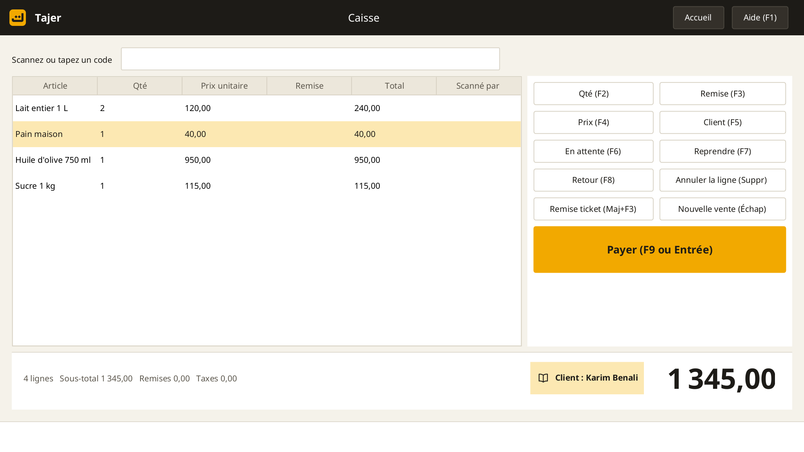
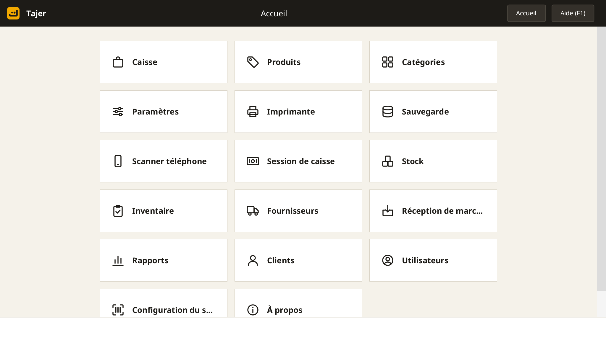
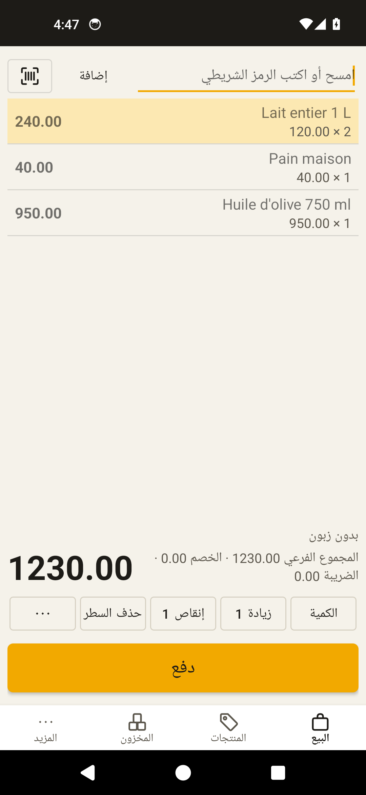

Sales, stock and customer credit for any shop, offline.
Barcode sales, credit book, stock with expiry dates, purchases, reports and backups. On desktop and on the phone, in Arabic, French, English, Spanish, Italian and German.
Beta version: for testing only; data may change between versions. Keep a backup.
Download v1.0.0-beta.3
Screenshots



What it does
Fast at the till
Barcode scanner or phone camera, quick keys, everything on the keyboard.
Credit book
Balance per customer, limit, printed statement, receipt for every payment. No interest.
Stock with expiry
Dated lots, expired items blocked at sale, stock count, supplier purchases.
Works offline
Your data stays in your shop. No cloud, no tracking. Several tills on the local network.
Phone as scanner
Pair the phone with the PC over the shop Wi-Fi, or use it as a till on its own.
Proper documents
NIF, RC, NIS and AI on receipt and invoice, daily close, PDF reports.
Requirements
- Windows 7 or later PC, 2 GB RAM, any dual-core CPU.
- ESC/POS receipt printer, 58 or 80 mm (optional).
- USB barcode scanner or phone camera (optional).
- Android 5 or later phone (optional).
Install
- Run the installer and keep the folder C:\RetailPOS (a name in Latin letters).
- Allow the firewall rule if you want to pair a phone.
- On first start: language, shop with NIF and RC, backup password, administrator.
Licences and source
Tajer is based on Floreant POS (MRPL 1.2 licence). The source of the licensed parts is available on request under the source offer.